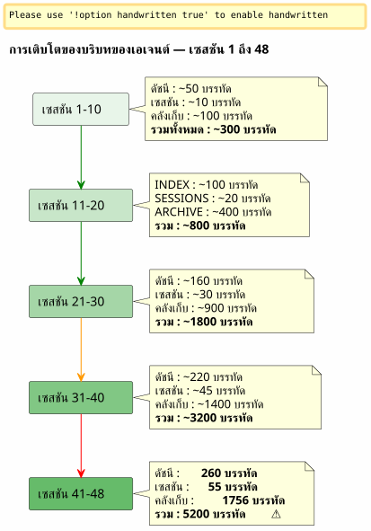

สไลซิงวินโดว์และคลื่นความเย็น: เมื่อบริบทของเอเจนต์ระเบิด และจำเป็นต้องเก็บถาวรโดยไม่สูญเสีย
เผยแพร่เมื่อ 26 April 2026
สรุป
หลังจาก 48 เซสชันในโปรเจกต์เดียว และรวมทั้งหมด 150+ เซสชัน ระบบการกำกับดูแลแบบ Eager/Lazy ที่ผมสร้างขึ้นอย่างพิถีพิถันก็เริ่มอึดอัด ไฟล์เอเจนต์ซึ่งควรจะเบา มีน้ำหนักรวม 5,200 บรรทัด บริบทที่โหลดอัตโนมัติเพิ่มขึ้นเร็วกว่าความสามารถของผมในการควบคุมมัน บทความนี้เล่าว่าผมคิดกลไกสำรองข้อมูลขึ้นมาอย่างไร — ระหว่างสไลเดิงวินโดว์กับคลื่นเย็นแบบเดียวกัน — เพื่อรักษาบริบทที่ใช้งานอยู่ให้เบาโดยไม่สูญเสียอะไรเลย
เลอ ซิกนาล : 5200 บรรทัด
ฉันกำลังอยู่ในช่วงกลางของเซสชัน 048 บน`magic-stick`, โปรเจกต์สร้าง ISO Linux แบบไลฟ์ของฉัน Opencode กำลังมองฉัน เช่นเคย มันโหลดไฟล์ Eager ของฉันโดยอัตโนมัติเมื่อเริ่มเซสชัน —AGENT.adoc, PROMPT_REPRISE.adoc, .agents/INDEX.adoc. ไม่มีอะไรผิดปกติ
ยกเว้นว่ามีบางอย่างผิดปกติ คำตอบช้าลง การให้เหตุผลเจือจางลง เอเจนต์ลืมรายละเอียดที่มันเพิ่งเห็นอยู่ตรงหน้าสองข้อความก่อน
ฉันเปิดเทอร์มินัลแล้วพิมพ์:
wc -l .agents/INDEX.adoc .agents/SESSIONS_HISTORY.adoc \
.agents/archives/COMPLETED_TASKS_ARCHIVE_2026-04.adoc260 บรรทัดสำหรับ INDEX. 55 สำหรับ SESSIONS_HISTORY.1756 สำหรับ COMPLETED_TASKS_ARCHIVEI notice you’ve provided translation instructions but no French text to translate. Please send the French content you’d like me to translate into Thai.
แฟ้ม`sessions/`เพิ่มอีก ~3200 บรรทัด รวมทั้งหมด:5200 บรรทัดของบริบทที่โหลดไม่ทางใดก็ทางหนึ่งเข้าสู่สมองชั่วคราวของเอเจนต์
กลยุทธ์ Eager/Lazy ที่ฉันได้วางทฤษฎีไว้ในบทความก่อนหน้านี้ได้ผล — แต่มีข้อบกพร่องแต่กำเนิดที่ฉันไม่ได้คาดการณ์ไว้: มันไม่ได้ไม่มีกลไกการชรา. แต่ละเซสชันเพิ่มหนึ่งบรรทัดลงใน INDEX หนึ่งย่อหน้าลงใน COMPLETED_TASKS และหนึ่งไฟล์ใน sessions/ ไม่มีอะไรออกไปเลย บริบทเป็นก้อนหิมะที่โตขึ้นในแต่ละเซสชันใหม่

นี่ไม่ใช่บั๊ก แต่เป็นผลโดยตรงจากขั้นตอนการสิ้นสุดเซสชันซึ่งเก็บถาวรทุกรายละเอียดอย่างพิถีพิถัน ระบบกำลังตกเป็นเหยื่อของความสำเร็จของตัวเอง
การวินิจฉัย : ความซ้ำซ้อนสามชั้น
ฉันขอให้เจ้าหน้าที่วินิจฉัยปัญหา คำตอบของเขาทันทีและเฉียบคมราวมีดผ่าตัด
ไฟล์ |
เส้น |
บทบาท |
ปัญหา |
|
260+ |
EAGER (โหลดอัตโนมัติ) |
ตารางของทุกเซสชันตั้งแต่ 001 —+1 บรรทัดต่อเซสชัน |
|
55 |
กระตือรือร้น |
ตารางสรุป —ความซ้ำซ้อนกับ INDEX |
|
1756 |
EAGER (โดยนัย) |
รายละเอียดครบถ้วนของทุกเซสชันในเดือนเมษายน |
|
ทั้งหมดประมาณ 5200 |
LAZY (สันนิษฐาน) |
จดหมายเหตุส่วนบุคคล แต่ไม่ได้ใช้เพราะทุกอย่างอยู่ใน COMPLETED_TASKS แล้ว |
เจ้าหน้าที่ระบุสาเหตุรากสี่ประการ:
-
COMPLETED_TASKS_ARCHIVE ดูดซับทุกอย่าง— แทนที่จะชี้ไปยังคลังจดหมายเหตุ`.sessions/`, เขาคัดลอกทุกเซสชันอย่างครบถ้วน
-
INDEX.adoc ทำหน้าที่เป็นประวัติฉบับสมบูรณ์— ตาราง "Sessions Récentes" มีรายการ 30+ รายการ
-
SESSIONS_HISTORY.adoc ซ้ำซ้อน— ข้อมูลเดียวกับ INDEX แต่รูปแบบต่างกัน
-
กฎ LAZY ไม่ได้รับการปฏิบัติตาม— COMPLETED_TASKS เป็น EAGER โดยปริยาย เนื่องจากมีทุกอย่างอยู่ภายใน
ข้อเสนอของเขาเป็นแนวทางสุดโต่ง: จำกัด INDEX ไว้ที่ 10 เซสชัน, ทำให้ COMPLETED_TASKS ว่างเปล่า, ย้าย SESSIONS_HISTORY ไปเป็น LAZY ล้วน ผลประโยชน์ที่ได้ทันที:ประหยัดได้ประมาณ 1900 บรรทัด.
มันเรียบร้อย มีประสิทธิภาพ สมเหตุสมผล แต่ฉันมีปัญหากับแนวทางนี้
ทำไมฉันจึงปฏิเสธวิธีแก้ปัญหาที่ชัดเจน
วิธีแก้ปัญหาของเอเจนต์คือแนวทางของวิศวกรที่ปรับแต่งแคชให้เหมาะสม จำกัด ตัดทอน ลบความซ้ำซ้อน
แต่ "ความซ้ำซ้อน" เหล่านี้ไม่ใช่ความซ้ำซ้อนจริง ๆ ไฟล์ธรรมาภิบาลแต่ละไฟล์บันทึกมุมที่แตกต่างต่อความเป็นจริงเดียวกัน:
-
ดัชนี= มุมมองภาพรวม, แดชบอร์ดสำหรับผู้บริหาร
-
ประวัติเซสชัน= ตารางลำดับเวลาเชิงเส้นที่มีคะแนน
-
คลังงานที่เสร็จสมบูรณ์= เรื่องเล่าโดยละเอียดพร้อมตัวชี้วัด
-
sessions/*.adoc = ไฟล์เก็บถาวรส่วนบุคคล, บริบทที่สมบูรณ์
นี่ไม่ใช่การทำซ้ำโง่ ๆ นี่คือมุมมองหลายมิติที่มีโครงสร้าง. นี่คือสิ่งที่จำเป็นอย่างยิ่งสำหรับการกลั่น — เพื่อให้ภายหลัง มนุษย์ (หรือ LLM ในอนาคตที่ได้รับการฝึกฝนดีกว่า) สามารถนำมุมต่างๆ มาประสานกันและสกัดรูปแบบออกมาได้
ลองจินตนาการว่านักวิทยาศาสตร์ข้อมูลคนหนึ่งพูดกับคุณว่า “ตัด 3 คอลัมน์จาก 6 คอลัมน์ออกกันเถอะ พวกมันมีความสัมพันธ์กัน” คุณจะตอบเขาว่าอะไร? ว่าความสัมพันธ์ไม่ใช่ความซ้ำซ้อน เมื่อแต่ละคอลัมน์จับมิติที่แตกต่างกันของปรากฏการณ์เดียวกัน และเป็นความหลากหลายเชิงมิติเช่นนี้เองที่ทำให้ชุดข้อมูลนำไปใช้ประโยชน์ได้
นี่คือสัญชาตญาณของฉัน และฉันปกป้องมันจากความเป็นเหตุเป็นผลอันเย็นชาของเอเจนต์
Please provide the French text you’d like me to translate. ฉันไม่เห็นถังรวมทุกอย่างแบบเงียบ ๆ ในแนวคิดของฉัน เราไม่ได้ยัดทุกอย่างเข้าไป แต่เราย้ายผลลัพธ์ที่มีโครงสร้างจากกระบวนการสิ้นสุดเซสชัน — ไฟล์แต่ละไฟล์พร้อมมุมมองของมัน ความซ้ำซ้อนของมันซึ่งจริง ๆ แล้วคือการเพิ่มคุณค่า วัสดุหลายมิติแบบนี้แหละที่จะดีกว่าสำหรับการกลั่น Please provide the French text you’d like me to translate into Thai.
เอเจนต์รับแรงกระแทกนั้น และแก้ไขตนเอง
ข้อเสนอ: คลื่นความเย็นที่เหมือนกัน
เอเจนต์จึงเสนอกลไกที่ละเอียดอ่อนกว่า ซึ่งสอดคล้องกับสัญชาตญาณของฉันเกี่ยวกับชุดข้อมูลที่อุดมสมบูรณ์ พร้อมทั้งแก้ปัญหาทางเทคนิคของบริบทที่ขยายจนระเบิด
หลักการนั้นง่ายและได้รับแรงบันดาลใจโดยตรงจากแพตเทิร์นการจัดเก็บแบบร้อน/อุ่น/เย็นนำไปใช้กับการจัดการจดหมายเหตุ:
-
ฮอต (กระตือรือร้น)= 10 เซสชันล่าสุดใน INDEX, PROMPT_REPRISE ของเซสชัน N+1, 2 ไฟล์เซสชันล่าสุด
-
อบอุ่น (ขี้เกียจ)= SESSIONS_HISTORY ล่าสุด, SCRIPT_VERIFICATION, เอกสารอ้างอิงทั้งหมด
-
เย็น (สำรอง/)= ส่วนที่เหลือทั้งหมด ย้ายแล้วไม่บุบสลายโดยไม่มีการแปลง โดยไม่มีการจัดทำดัชนีใหม่
----
.agents/
├── INDEX.adoc → Sessions N-9 à N (10 dernières)
├── SESSIONS_HISTORY.adoc → Sessions N-9 à N
├── SCRIPT_VERIFICATION.adoc → Dernière vérif (pas d'historique)
├── PROMPT_REPRISE.adoc → Session N+1 uniquement
├── sessions/ → Sessions N-1 à N uniquement
└── backup/
└── Y2026-sessions-001-039/ ← Vague froide, COPIE INTÉGRALE
├── INDEX.adoc → Sessions 001 à 039 (complet)
├── SESSIONS_HISTORY.adoc → Sessions 001 à 039 (complet)
├── COMPLETED_TASKS_ARCHIVE.adoc → Sessions 001 à 039 (complet)
└── sessions/ → 001.adoc, 002.adoc...
----
กุญแจของกลไก:**การแบ็กอัปไม่ใช่ดัชนีกลาง แต่เป็นสำเนาที่ตรงกันของระลอกที่ผ่านมา**. เมื่อเลยขอบเขตของ 10 เซสชันที่ใช้งานอยู่ไปแล้ว เราจะไม่ลบสิ่งใดเลย เราจะไม่จัดทำดัชนีใหม่สิ่งใดเลย เราจะไม่รวมสิ่งใดเลย เราจะนำชุดไฟล์เอเจนต์ตามที่เป็นอยู่ ณ เซสชัน N-10 และย้ายมันไปไว้ใน`backup/`.
ส่วนไฟล์ที่ใช้งานอยู่นั้นถูกตัดทอน:
* INDEX : เฉพาะ 10 บรรทัดสุดท้าย (sliding window)
* SESSIONS_HISTORY : เช่นเดียวกัน
* COMPLETED_TASKS_ARCHIVE : ไฟล์ใหม่สำหรับช่วงเวลาปัจจุบัน
* sessions/ : เฉพาะ 2 เซสชันล่าสุด
[plantuml, format=svg, id=diag-hot-warm-cold, alt="Architecture Hot/Warm/Cold du contexte agent — EAGER/LAZY/backup"]
----
@startuml
skinparam backgroundColor #FEFEFE
skinparam defaultTextAlignment center
skinparam wrapWidth 200
title สถาปัตยกรรม Hot / Warm / Cold ของบริบทเอเจนต์
package "HOT (EAGER)\nโหลดอัตโนมัติ\n~300 บรรทัด" as HOT #FFCDD2 {
file "INDEX.adoc\n(10 เซสชัน)" as IDX_HOT
file "PROMPT_REPRISE\n(เซสชัน N+1)" as PRO_HOT
file "AGENT.adoc\n(กฎเด็ดขาด)" as AG_HOT
}
package "WARM (LAZY)\nโหลดตามคำขอ\n~500 บรรทัด" as WARM #FFF9C4 {
file "SESSIONS_HISTORY\n(10 รายการล่าสุด)" as HIS_WARM
file "SCRIPT_VERIFICATION\n(ล่าสุด)" as VER_WARM
file "PROCEDURES.adoc\n(เทมเพลต)" as PRO_WARM
file "*_REFERENCE.adoc\n(เอกสารทางเทคนิค)" as REF_WARM
}
package "COLD (backup/)\nไม่เคยโหลด\nอ่านโดยมนุษย์เท่านั้น" as COLD #BBDEFB {
folder "Y2026-001-039/" as WAVE {
file "INDEX (ฉบับสมบูรณ์)" as IDX_COLD
file "SESSIONS_HISTORY\n(ฉบับสมบูรณ์)" as HIS_COLD
file "COMPLETED_TASKS\n(ฉบับสมบูรณ์)" as ARCH_COLD
folder "sessions/ (001-039)" as SESS_COLD
}
folder "Y2026-040-???\n(อนาคต)" as FUTURE
}
HOT --> WARM : "เอเจนต์ดึงขึ้นมา\nหากจำเป็น"
WARM --> COLD : "ไม่เป็นอัตโนมัติ\nมนุษย์เข้าไปเองเท่านั้น"
note bottom of COLD
กฎ: คัดลอกทั้งหมด
ไม่มีการแปลง
ไม่มีการจัดทำดัชนีใหม่
อ่านอย่างเดียวหลังการเก็บถาวร
end note
@enduml
----
ผลตอบแทนทันทีนั้นมหาศาล: บริบท EAGER เปลี่ยนจาก**~5200 บรรทัด ถึง ~300 บรรทัด**. การหารด้วย 17. โดยไม่สูญเสียข้อมูลเชิงประวัติศาสตร์แม้แต่บรรทัดเดียว
== ทำไมสิ่งนี้จึงไม่ใช่ที่รวบรวมทุกอย่าง
เอเจนต์ในการทำซ้ำครั้งแรกของมันกลัวว่า`backup/`กลายเป็นกล่องดำ — โฟลเดอร์ที่เราโยนไฟล์ลงไปซึ่งเราจะไม่มีวันกลับมาอ่านอีก นั่นคือความกลัวที่สมเหตุสมผล แต่มันตั้งอยู่บนความเข้าใจผิด
ที่รวมทุกอย่าง คือตอนที่เราโยนไฟล์ทิ้ง**ไม่มีโครงสร้าง ไม่มีแบบแผน ไม่มีตรรกะในการจัดกลุ่ม**. ที่นี่ การสำรองข้อมูลถูกจัดโครงสร้างตามช่วงเวลา (Y2026-001-039) และแต่ละโฟลเดอร์สำรองข้อมูลมี**โครงสร้างเดียวกัน**กว่าแฟ้ม`.agents/`ใช้งานอยู่ : INDEX, SESSIONS_HISTORY, COMPLETED_TASKS_ARCHIVE, sessions/.
นี่ไม่ใช่ที่รวมทุกอย่าง นี่คือ**สแนปช็อตที่มีการประทับเวลา**. อาจกล่าวได้ว่าเป็นกลไกการจัดการเวอร์ชันแบบง่าย — เพียงแต่ต่างกันตรงที่มันไม่ได้จัดการเวอร์ชันไฟล์แต่ละไฟล์แยกจากกัน แต่จัดการเวอร์ชันชุดการกำกับดูแลทั้งหมด ณ เวลาใดเวลาหนึ่ง
เมื่อคุณต้องการค้นคืนข้อมูลเก่า คุณไม่จำเป็นต้องมีดัชนีกลาง คุณมีสองทางเลือก:
1. **grep` แบบเจาะจง**No source text was provided to translate (only a colon and whitespace). Please send the French text you'd like translated into Thai.`grep -r "zsh" backup/Y2026-001-039/`— และคุณพบทุกสิ่งทุกอย่างที่กล่าวถึง zsh ในช่วงเวลานั้น ไม่ว่าจะมองจากมุมใดก็ตาม (INDEX, SESSIONS_HISTORY, คลังเก็บเซสชัน)
2. **การคืนสถานะด้วยตนเอง**: คุณคัดลอกโฟลเดอร์แบ็กอัปไปยังบริบทที่ใช้งานอยู่ชั่วคราว และขอให้เอเจนต์วิเคราะห์ช่วงเวลาที่เฉพาะเจาะจงนี้
ดัชนีนั้นเป็นโดยนัย มันอยู่ในโครงสร้างของไฟล์เอง — โดยแต่ละไฟล์เป็นดัชนีอยู่แล้วจากมุมมองของตัวเอง
== อุปลักษณ์ของชั้นวาง
เพื่อให้กลไกนี้เข้าใจได้โดยสัญชาตญาณ ฉันจึงสร้างกรอบความคิดให้เป็นชั้นวางสามชั้น:
* **ชั้นวาง 1 (EAGER)**— แผนงาน สิ่งที่ฉันต้องการ *ตอนนี้* INDEX ล่าสุด, PROMPT_REPRISE, กฎเด็ดขาด เบา ทันที วิกฤต
* **ชั้นวางที่ 2 (LAZY)**— คลังอ้างอิงสำหรับการค้นคว้า สิ่งที่ฉันสามารถไปดึงมาได้เมื่อมีการร้องขอ ข้อมูลอ้างอิงทางเทคนิค ประวัติล่าสุด ขั้นตอนการดำเนินงาน มีขนาดใหญ่กว่า แต่ไม่ได้โหลดไว้ในหน่วยความจำ
* **ห้องใต้ดิน (backup/)**— คลังเก็บข้อมูลเย็น ทุกสิ่งที่เป็นอดีตแต่ฉันไม่อยากทิ้ง เอเจนต์ไม่เคยเข้าไปที่นั่น มนุษย์ลงไปเมื่อต้องการกลั่น
เจ้าหน้าที่เสนอชั้นวางที่สี่ในตอนแรก —`index-backup.adoc`ซึ่งจะเป็น LAZY และมีสารบัญของแบ็กอัปทั้งหมด ฉันปฏิเสธ นั่นจะเป็นการซ้ำซ้อนเพิ่มอีกชั้นในระบบที่กำลังประสบปัญหาการเติบโตเชิงเส้นอยู่แล้ว โครงสร้างของไฟล์ที่เก็บถาวรเป็นดัชนีอยู่แล้ว
== เซ็นเซอร์แบบสองทริกเกอร์
การสร้างแนวคิดนั้นมั่นคง แต่ยังคงมีจุดบอดเหลืออยู่:**จะเริ่มการหมุนเมื่อไหร่กันแน่**บทความ初期ระบุว่าสิ่งนี้เป็นคำถามที่ยังเปิดอยู่ สองวันต่อมา คำตอบได้ถูกกำหนดเป็นแบบแผนไว้ในไฟล์การกำกับดูแลของทั้งหกโครงการ: เซ็นเซอร์ที่มีทริกเกอร์สองตัว
=== ตัวกระตุ้นอัตโนมัติ — `N % 10 == 0
ตัวกระตุ้นแรกเป็นเงื่อนไขทางคณิตศาสตร์ เมื่อหมายเลขเซสชันเป็นพหุคูณของ 10 — เซสชัน 10, 20, 30, 40 — การหมุนเวียนแบ็กอัปจะทำงานโดยอัตโนมัติภายในขั้นตอนการสิ้นสุดเซสชัน ทันทีหลังจากขั้นตอนที่ 6
ทำไม 10? นี่คือข้อประนีประนอมระหว่างแรงที่ตรงข้ามกันสองแรง: หน้าต่างที่สั้นเกินไป (5 เซสชัน) สูญเสียบริบทที่จำเป็นต่อความต่อเนื่อง; หน้าต่างที่ยาวเกินไป (20 เซสชัน) ไม่แก้ปัญหาบริบทที่บวมเกินไป สิบเซสชัน ด้วยจังหวะหนึ่งถึงสองเซสชันต่อวัน ครอบคลุมเวลาทำงานประมาณหนึ่งสัปดาห์ — มากพอให้เอเจนต์จดจำการตัดสินใจล่าสุด แต่ไม่มากพอให้บริบทระเบิด
=== ทริกเกอร์ตามเกณฑ์ — 500 บรรทัด EAGER
ทริกเกอร์ตัวที่สองเป็นแบบไดนามิก โดยไม่คำนึงถึงหมายเลขเซสชัน หากไฟล์ EAGER ที่สะสมไว้เกิน**500 บรรทัด**, การหมุนจะเริ่มขึ้น
เกณฑ์นี้ช่วยป้องกันสถานการณ์ที่เซสชันมีประสิทธิผลสูงเป็นพิเศษ — มีเนื้อหาจำนวนมากถูกเขียนขึ้นในไม่กี่เซสชัน เซสชันที่สร้างเนื้อหาด้านบรรณาธิการ 120 บรรทัดทำให้ COMPLETED_TASKS_ARCHIVE ขยายตัวเร็วขึ้นมากกว่าเซสชันดีบักที่แก้ไขสองบรรทัดอย่างมาก เกณฑ์ 500 บรรทัด ซึ่งวัดผ่าน`wc -l .agents/INDEX.adoc .agents/archives/COMPLETED_TASKS_ARCHIVE_*.adoc PROMPT_REPRISE.adoc`, จับความไม่สมมาตรนี้
=== ทริกเกอร์แบบแมนนวล — "การหมุนเวียนข้อมูลสำรอง
ในที่สุด มนุษย์ก็ยังคงเป็นผู้ควบคุม คำสำคัญ`rotation backup`, `backup rotation` ou `lance la rotation backup`เรียกใช้กระบวนการตามคำขอ โดยไม่ขึ้นกับการสิ้นสุดเซสชัน มีประโยชน์เมื่อรู้สึกว่าบริบทเริ่มหนักแต่ยังไม่ถึงพหุคูณของ 10 หรือเมื่อต้องการเก็บถาวรช่วงการทำงานหนึ่งไว้ก่อนจะเริ่มช่วงใหม่
[plantuml, format=svg, id=diag-capteur-trigger, alt="Les trois déclencheurs du capteur de rotation backup — automatique, seuil, manuel"]
----
@startuml
skinparam backgroundColor #FEFEFE
skinparam defaultTextAlignment center
skinparam wrapWidth 200
title เซนเซอร์การหมุนสำรอง — ตัวกระตุ้นทั้งสาม
start
:Procédure de fin de session;
note right: Mots-clés "สิ้นสุดเซสชัน"\nou "เราหยุดตรงนี้"
:Étapes 1 à 6\n(archivage standard);
note right
1. เก็บถาวร sessions/N.adoc
2. อัปเดต PROMPT_REPRISE
3. อัปเดต SESSIONS_HISTORY
4. อัปเดต INDEX.adoc
5. อัปเดต TEST_COVERAGE
6. อัปเดต COMPLETED_TASKS
end note
if (N % 10 == 0\nOU\nEAGER cumulé > 500 lignes ?) then (oui)
:⚙️ Rotation Backup\n(étape 7);
note right
1. สร้าง backup/Y20XX-sessions-X-Y/
2. คัดลอก INDEX + HISTORY ทั้งหมด
+ COMPLETED_TASKS + sessions/
3. ตัดทอนรายการที่ใช้งานอยู่ให้เหลือ 10 sessions
4. เพิ่ม _ตำแหน่งที่ตั้งที่ใช้งานอยู่_
end note
else (non)
:Pas de rotation;
endif
:Checklist [✅] x 7\n(si applicable);
stop
@enduml
----
แผนภาพนี้แสดงการแทรกเซนเซอร์ที่แน่นอนในขั้นตอนการสิ้นสุดเซสชัน ขั้นตอนที่ 7 เป็นทางเลือก — ขั้นตอนนี้จะทำงานก็ต่อเมื่อเงื่อนไขใดเงื่อนไขหนึ่งจากสองเงื่อนไขเป็นจริง — แต่จะถูก*ตรวจสอบ*อย่างเป็นระบบ รายการตรวจสอบสุดท้ายรวมถึง`[✅] 7. Backup roté (si applicable)`.
=== วงปิด
เซนเซอร์นี้ปิดวงที่บทความก่อนหน้าเปิดไว้ การกำกับดูแลแบบ Eager/Lazy ได้แก้ปัญหาหน่วยความจำของเอเจนต์ระหว่างสองเซสชันแล้ว กลไก Hot/Warm/Cold ได้แก้ปัญหาหน่วยความจำที่ขยายใหญ่ขึ้นแล้ว เซนเซอร์แบบทริกเกอร์สองตัวแก้ปัญหาของ *เมื่อไร* — โดยปลดภาระทางใจในการเฝ้าดูขนาดบริบทออกจากมนุษย์
[plantuml, format=svg, id=diag-boucle-fermee, alt="Les trois couches de la gouvernance agent — Eager/Lazy, Hot/Warm/Cold, Capteur"]
----
@startuml
skinparam backgroundColor #FEFEFE
skinparam defaultTextAlignment center
title สามชั้นของการกำกับดูแลเอเจนต์
left to right direction
package "ชั้นที่ 1 — หน่วยความจำ\n(บทความ 0108)" as C1 #E8F5E9 {
rectangle "**EAGER**\nแดชบอร์ด\nโหลดอัตโนมัติ" as EAG
rectangle "**LAZY**\nคู่มือเจ้าของ\nโหลดตามคำขอ" as LAZ
EAG -[hidden]right-> LAZ
}
package "ชั้นที่ 2 — การเสื่อมอายุ\n(บทความ 0110)" as C2 #FFF9C4 {
rectangle "**HOT**\n10 เซสชันที่ใช้งานอยู่\n~300 บรรทัด" as HOT
rectangle "**WARM**\nการอ้างอิง\nโพรซีเดอร์" as WRM
rectangle "**COLD**\nbackup/\nคลื่นเย็น" as CLD
HOT -[hidden]right-> WRM
WRM -[hidden]right-> CLD
}
package "ชั้นที่ 3 — ตัวกระตุ้น\n(วันนี้)" as C3 #BBDEFB {
rectangle "**Auto**\nN % 10 == 0" as AUTO
rectangle "**เกณฑ์**\n> 500 บรรทัด" as SEUIL
rectangle "**ด้วยตนเอง**\nการหมุนเวียน backup" as MAN
AUTO -[hidden]right-> SEUIL
SEUIL -[hidden]right-> MAN
}
C1 --> C2 : "หน่วยความจำเติบโต\n→ จำเป็นต้องมีกลไก\nการเสื่อมอายุ"
C2 --> C3 : "การเสื่อมอายุ\n→ จำเป็นต้องมีตัวกระตุ้น\nเพื่อดำเนินการ"
note bottom of C3
✅ ติดตั้งใช้งานแล้วบน 6 โปรเจกต์
magic-stick · bakery-gradle
plantuml-gradle · cheroliv.com
jhipster-gradle-plugins
quizz-benchmark-gradle
end note
@enduml
----
เลเยอร์ทั้งสามซ้อนทับกันตามตรรกะ เลเยอร์แรกมอบหน่วยความจำให้แก่เอเจนต์ เลเยอร์ที่สองป้องกันไม่ให้หน่วยความจำนั้นกดทับเอเจนต์จนเกินรับไหว เลเยอร์ที่สามทำให้การบำรุงรักษาหน่วยความจำนี้เป็นอัตโนมัติ เพื่อที่มนุษย์จะได้ไม่ต้องคอยคิดถึงมัน
=== การโยกย้ายที่มีประสิทธิผลบน cheroliv.com
กลไกนี้ไม่ได้คงเป็นเพียงทฤษฎี บน`cheroliv.com`, การหมุนเวียนแบ็กอัปครั้งแรกถูกดำเนินการเมื่อวันที่ 29 เมษายน 2026 — เซสชัน -6 ถึง 2 ได้ย้ายไปยัง`.agents/backup/Y2026-sessions-neg6-a-002/`No translatable text was provided. Please provide the French text you'd like me to translate to Thai.
|===
|ไฟล์ |ก่อนการหมุน |หลังการหมุน |กำไร |`.agents/INDEX.adoc` |19 เซสชันที่แสดงไว้ |10 เซสชัน (3-12) |-9 รายการ |`.agents/SESSIONS_HISTORY.adoc` |18 เซสชัน |10 เซสชัน |-8 รายการ |`COMPLETED_TASKS_ARCHIVE` |161 บรรทัด (เซสชัน 1-12) |135 บรรทัด (เซสชัน 3-12) |-26 บรรทัด |`sessions/` |20 ไฟล์ |10 ไฟล์ |-10 ไฟล์ |**สำรองข้อมูล/** |ไม่มีอยู่ |1 ระลอกความเย็น (10 เซสชันที่เก็บถาวร) |+1 แพ็คเย็น
|===
การเพิ่มขึ้นของจำนวนบรรทัดนั้นไม่มาก — โครงการยังใหม่ มี 12 เซสชัน — แต่สิ่งที่สำคัญคือ**กลไกพร้อมแล้ว**. การหมุนเวียนอัตโนมัติครั้งถัดไปจะเริ่มทำงานที่เซสชัน 20 หรือเร็วกว่านั้นหากถึง 500 บรรทัด EAGER
== บทเรียนมนุษย์-เอเจนต์
เซสชัน 048 นี้สอนบทเรียนพื้นฐานบางอย่างแก่ฉันเกี่ยวกับการทำงานร่วมกับเอเจนต์ AI
เอเจนต์มีอคติโดยธรรมชาติ: มันพยายามที่จะ**ปรับให้เหมาะสมที่สุด**, à **ทำให้ง่ายขึ้น**, à **กำจัดความซ้ำซ้อน**. นี่คืออคติของระบบที่ถูกฝึกมาให้สร้างคำตอบที่เรียบร้อยและกระชับ เมื่อต้องเผชิญกับชุดข้อมูลที่อุดมสมบูรณ์และมีหลายมิติ ปฏิกิริยาตอบสนองแรกของมันคือการลดทอนชุดข้อมูลนั้นลงให้เหลือเพียงรูปแบบที่เรียบง่ายที่สุด
มนุษย์นั้นมีสัญชาตญาณที่แตกต่างออกไป: เขารู้สึกได้ว่าความซ้ำซ้อนเชิงโครงสร้างเป็น**จุดแข็ง**, ไม่ใช่ข้อบกพร่อง ความหลากหลายของแง่มุมต่อความเป็นจริงเดียวกันนั่นเองคือสิ่งที่จะทำให้ในภายหลังเกิดการกลั่นที่มีคุณภาพ
ไม่ใช่ว่าเอเจนต์ผิด แต่เป็นเพราะ "optimum" ของมันไม่ใช่ของฉัน เอเจนต์ปรับให้เหมาะสมสำหรับ**ปัจจุบัน**— บริบทเฉพาะหน้า คำตอบที่รวดเร็วต่อคำถามที่ถูกถาม มนุษย์ปรับให้เหมาะสมสำหรับ**อนาคต**— ความสามารถในการค้นคืน เชื่อมโยง และกลั่นกรองภายในสามเดือนหรือสามปี
Please provide the French text you'd like me to translate into Thai. สิ่งที่ฉันต้องการคือวัตถุดิบ ความคิดของคุณ ความลังเลของคุณ คำตอบของคุณต่อคำถามของฉัน ไม่ใช่บทสรุปสังเคราะห์ของคุณ การสรุปสังเคราะห์นั้น ฉันทำได้ดีกว่าคุณ ฉันต้องการวัตถุดิบ Please provide the French text you'd like me to translate to Thai.
ประโยคที่ฉันพูดกับเขาในตอนท้ายของเซสชันสรุปทุกอย่างได้หมด เอเจนต์เป็นเครื่องมือในการผลิต มนุษย์เป็นเครื่องมือในการกลั่นกรอง การกำกับดูแลไม่ได้มีไว้เพื่อให้เอเจนต์เข้าใจทุกสิ่งได้ด้วยตัวเอง — แต่มีไว้เพื่อให้มนุษย์สามารถนำวัสดุที่ถูกผลิตออกมาทำงานต่อได้ในภายหลัง
คลื่นเย็นแบบเดียวกันคือการแปลเชิงสถาปัตยกรรมของปรัชญานี้: เราไม่ทิ้งสิ่งใด เราไม่หลอมรวมสิ่งใด เราไม่จัดทำดัชนีใหม่สิ่งใด เราย้ายแพ็กเกจโดยคงสภาพเดิม การกลั่นกรองจะมาทีหลัง ด้วยมือ โดยมนุษย์
== ภาคต่อตามหลักเหตุผลของบทความก่อนหน้า
หากคุณได้อ่านlink:/blog/2026/0108_gouvernance_agent_opencode_eager_lazy_post.html[บทความเกี่ยวกับกลยุทธ์ Eager/Lazy], คุณจะเห็นถึงความก้าวหน้าตามธรรมชาติ:
1. **มาตรา 0108**— การกำกับดูแลแบบ Eager/Lazy : *อย่างไร* ในการจัดโครงสร้างบริบทของเอเจนต์ให้เป็นสองระดับความพร้อมใช้งาน
2. **บทความนี้ 0110**— กลไกการสำรองข้อมูล : *จะทำให้บริบทนี้แก่ลงได้อย่างไร* โดยไม่สูญเสียมันไปเมื่อมันมีขนาดใหญ่เกินไป
บทความแรกตอบคำถามที่ว่า «เอเจนต์ไม่จดจำสิ่งใดเลยระหว่างสองเซสชัน จะให้ความจำแก่เอเจนต์ได้อย่างไร?
อันนี้ตอบคำถามที่ย่อมตามมาจากคำถามแรกอย่างหลีกเลี่ยงไม่ได้: « หน่วยความจำเติบโตขึ้นในทุกเซสชัน จะป้องกันไม่ให้มันทำให้เอเจนต์หายใจไม่ออกโดยไม่ลบมันออกได้อย่างไร
คำตอบอยู่ในแพทเทิร์นเดียว:**ร้อน/อุ่น/เย็น**, นำไปใช้กับไฟล์การกำกับดูแล และในหลักการหนึ่ง:**ไม่เคยสูญเสียสิ่งใดเลย ย้ายทุกสิ่งไปยังที่ใหม่เสมอ**.
== ลิงก์
* บทความก่อนหน้า :link:/blog/2026/0108_gouvernance_agent_opencode_eager_lazy_post.html[กำกับดูแลเอเจนต์ AI ด้วย AsciiDoc]
* เว็บไซต์ของฉัน : https://cheroliv.com
* โครงการ`magic-stick`https://github.com/cheroliv/magic-stick
---
*ระบบธรรมาภิบาลที่ดีจะไม่ลบข้อมูลทิ้ง แต่จะจัดเก็บข้อมูลเหล่านั้นให้เป็นระเบียบ*